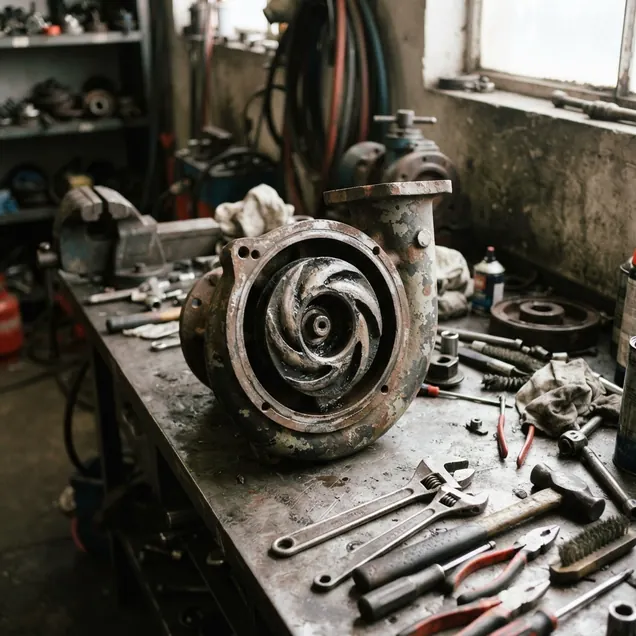

A property manager or maintenance lead running a community irrigation loop, a commercial transfer setup, or a continuous industrial process line notices something slower to catch than an outright failure: the pump never actually stopped working, but the output it delivers today is noticeably weaker than it was a few months ago. Flow that used to fill a zone or a tank in a set amount of time now takes longer, and pressure at the gauge reads lower than it used to under the same conditions. Nothing broke all at once. It just quietly got worse.
A Slow Decline Points Somewhere Different Than a Sudden Stop
A centrifugal pump that suddenly won't pump at all, or loses prime outright, is almost always dealing with an air leak on the suction side or a valve that let the water column drain back. That is a different failure entirely from what is being described here. A pump that keeps running and keeps moving water, just less of it, month over month, is telling you something is physically wearing away, or something is gradually closing off the path water travels to reach it. On high-duty-cycle equipment- commercial process water, community irrigation, continuous transfer duty- that gradual wear accumulates faster simply because the pump logs more running hours than a system that only cycles on and off briefly a few times a day.
Impeller Wear Is the Usual Suspect on High-Duty-Cycle Pumps
Inside the pump, the spinning impeller throws water outward into the volute casing by centrifugal force, and that only works efficiently while the clearance between the impeller and the casing, or the wear rings that seal that gap, stays tight. Constant operation wears down the impeller's vanes and opens up that clearance over years of running time, and any grit or fine sediment carried in the water, common where wells draw through sandy formations, accelerates that erosion well beyond what clean water alone would cause. As the clearance widens, some of the water the impeller just threw outward slips backward through the gap instead of being pushed on toward the discharge, and that internal slippage is what shows up at the gauge as a slow, steady drop in output with no other symptom to explain it.
Cavitation Wearing the Impeller From the Inside
A second, related mechanism can pit the impeller surface at the same time wear opens up clearance. Cavitation happens when the pressure at the impeller's eye drops low enough, from a suction lift that is too high, a partially restricted intake, or the pump being pushed to run near or above its rated capacity for extended periods, that tiny vapor bubbles form in the water and then collapse violently once they reach a higher-pressure zone inside the pump. Each collapse is a tiny, localized shock that erodes metal off the impeller surface, and that erosion looks remarkably similar to ordinary abrasive wear under inspection, which is why the two are often confused even though the underlying cause is different. Cavitation is not a seasonal issue; it shows up whenever the suction and flow conditions push the pump outside its designed operating range, which can happen year-round on a system running close to its limit.
A Suction Line Slowly Closing Off
The third path to the same symptom has nothing to do with the pump's internal parts at all. A strainer or foot valve screen on the suction side gradually accumulates sediment, scale, or biological growth, and as that buildup narrows the effective opening, the pump has to work against steadily increasing resistance just to pull the same volume of water it used to draw freely. Unlike impeller wear, which tends to develop over many months or years, a fouling suction line can progress noticeably faster, sometimes within weeks, depending on how much sediment or organic material the water source is carrying.
Why Commercial and Irrigation Duty Cycles Make All Three Worse
A home well pump might run a few minutes at a time and rest for long stretches between draws. A commercial process pump, a grove or HOA-wide irrigation system, or a continuous transfer application logs far more total running hours in the same calendar period, with far less recovery time between cycles. More running hours means more cumulative wear on the impeller and wear rings, more opportunity for cavitation to do damage if the system is ever pushed near its rated limit, and more water passing through the suction strainer to deposit sediment. None of that means commercial-duty pumps are built worse; it means the same wear mechanisms that take years to matter on a light-duty home system show up in a fraction of the time under continuous commercial load.
Reading the Decline Rate
The speed of the decline is itself a useful clue. A drop that develops over weeks points more toward a suction-side strainer or screen fouling with sediment than toward impeller wear, which is a slower, longer-running process measured in months to years. A pump running at or beyond its rated flow for extended stretches, or drawing from a suction lift near the edge of its design range, adds cavitation to the list regardless of how long it has been in service. A technician confirms which of these is happening by testing the pump's current flow and pressure output against its original rated performance curve, which pinpoints how far off normal the pump has drifted and narrows down where that loss is occurring.
Frequently Asked Questions
Tracing the Decline Back to Its Cause
A centrifugal pump that keeps running but delivers less over time is not malfunctioning randomly. It is either wearing internally from years of abrasive operation, being damaged by cavitation from marginal suction conditions, or fighting a suction line that has slowly narrowed with buildup, and continuous commercial and irrigation duty cycles accelerate all three simply by logging more hours. Testing current output against the pump's rated curve is what actually separates these causes, rather than guessing from the symptom alone.
Frequently asked questions
Can worn wear rings be replaced without swapping out the whole impeller?
Often, yes. Many centrifugal pumps use a set of replaceable wear rings inside the volute casing specifically so that the clearance around the impeller can be restored without machining or replacing the impeller itself, provided the impeller's own vanes have not worn or pitted too far to seal properly against a fresh ring. That makes a wear-ring replacement a meaningfully smaller repair scope than a full impeller swap when the impeller itself is still in reasonable shape.
How would I know cavitation is actually happening rather than just ordinary wear?
Cavitation usually comes with an audible clue that plain wear does not: a rattling or gravel-like sound coming from the pump housing while it runs, caused by the vapor bubbles collapsing against internal surfaces. Ordinary impeller wear from abrasive grit, by contrast, is typically silent and only shows up as a gradual drop in output with no unusual noise. Hearing that rattle alongside a flow decline points a technician toward checking suction conditions and operating point rather than just internal clearances.
Does running the pump above its rated flow actually shorten its life?
Yes. Operating away from a pump's best-efficiency point on its performance curve, particularly above its rated flow, increases radial thrust load on the shaft and bearings and makes the low-pressure conditions that trigger cavitation more likely even when suction conditions are otherwise adequate. A pump that is simply oversized or undersized for its actual duty tends to wear faster than one matched closely to the system it serves.
Could a partially closed valve somewhere downstream cause this same symptom?
It can, and it is worth checking before assuming the pump itself has degraded. Throttling flow with a partially closed valve shifts the pump's operating point along its performance curve, which can either mask a real decline for a while or produce a drop in delivered flow that looks identical to impeller wear even though the pump internals are fine. Confirming valve positions throughout the system is a quick step that can rule out or rule in the pump itself before further diagnosis.
What actually extends the service life of a pump running continuous commercial duty?
Routine strainer cleaning and staying within the pump's rated flow both help, but a factor that gets overlooked is the original suction pipe layout. A suction run with more elbows, restrictions, or vertical lift than the pump was designed for creates marginal suction conditions from the day it was installed, and no maintenance schedule fixes a layout problem; it only slows how fast that layout's shortcomings show up as cavitation damage. Reviewing the suction-side piping against the pump's design specs is worth doing once, especially on equipment that has had repeat cavitation-type wear.
What should be tracked to catch a decline like this earlier next time?
A simple, repeatable baseline works better than waiting for a complaint. Logging discharge pressure at a fixed point periodically, or even just timing how long the pump takes to fill a known volume or complete a known irrigation cycle, creates a reference that makes a developing decline visible well before output drops enough to become an obvious problem. Comparing against that baseline periodically catches the trend while it is still a minor efficiency loss rather than a pump nearing failure.
If a centrifugal pump on your property is losing flow or pressure, have it tested - a technician can check the impeller, wear rings, and suction line against the pump's rated performance curve to find where the loss is happening.